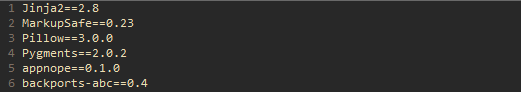
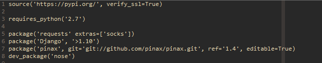

파이썬 의존성 관리
 일반적인 pip 프로젝트의 requirements.txt. 주 의존성과 부수적 의존성의 구분이 없다
파이썬의 훌륭한 라이브러리 생태계에도 불구하고, 큰 프로젝트를 시작할 때면 항상 requirements.txt를 통해 의존성을 관리하는 방식 때문에 고생을 한다. 일반적으로 pip 프로젝트의 경우 pip freeze를 통해 현재 파이썬 런타임에 설치된 패키지들의 버전들을 고정하여 requirements.txt에 저장한다. 그런데 이런식으로 의존성을 관리할 경우 주 의존성과 부수적 의존성들을 구분하기 어렵고, 따라서 라이브러리 버전 업데이트가 필요한 경우 수작업을 통해 서로의 요구조건에 부합하는 버전을 짜맞추어야 하는 비극적인 상황이 발생할 수 있다.
간단한 예를 들어보자. 기존의 주 의존성 A.1이 B.2x에 의존하고, 새로 업데이트 된 A.2가 B.3x에 의존하는 상황에서 단순히 주어진 requirements.txt의 A.1을 A.2로 바꾸어 의존성을 업데이트 하려는 경우, B에서 버전충돌이 일어나게 된다. requirements.txt에 부수적 의존성인 B.2x가 명시되어 있기 때문이다. 작은 장난감 프로젝트에서야 눈대중으로 requirements.txt을 흝어보며 B도 알맞게 버전을 갱신해주는 방식으로 해결 가능하지만, 수십개의 라이브러리를 쓰는 큰 규모의 프로젝트에서 이런 일이 발생할 경우엔 슬픈 상황이 벌어진다.
이 문제는 사실 requirements.txt에 빌드 시점의 전체 의존성을 저장하는 기존방식 그 자체 때문이 아니라, 주 의존성과 빌드 시점의 전체 의존성을 따로 관리하는 메커니즘을 제공하지 않기 때문에 발생하는 문제다. 개발자들이 관리하고 싶은 것은 주 의존성 A이지, 부수적 의존성 B가 아니다. 따라서 주 의존성 A만을 관리하되, 결정론적인 빌드 재생산을 위한 빌드 시점의 전체 의존성은 따로 걸어잠구어 기록해두는 것이 논리적으로 옳다. 실제로 주 의존성들만을 관리하고, 라이브러리 업데이트를 할 때만 주 의존성들의 요구조건을 만족시키는 선에서 부수적 의존성들도 갱신하게끔하면 위 문제는 자연스레 해결된다. 문제의 근본적인 원인이었던 주 의존성과 부수적 의존성 간의 우선순위가 정해졌기 때문이다.
다행히도 pypa팀에서 이 두 가지 의존성을 동시에 관리할 수 있도록 보장하는 Pipfile의 명세를 작성하는 작업을 며칠 전 시작했다. 아직 명세가 확정되진 않았지만, 주요한 변화는 다음과 같다:
 현재 명세 초안에 공개된 Pipfile 예시. Pipfile은 주 의존성만을 기록하고, 전체 의존성은 Pipfile.lock에 pin된다
- 커스텀 업스트림 저장소 설정기능 추가
- 프로젝트에 필요한 주 의존성들만
Pipfile에 기록하여 관리 - 빌드 시점의 프로젝트 전체 의존성은
Pipfile.lock에 고정하여 관리 Pipfile.lock의 의존성 해시 체크섬 기능을 통해 배포환경에서 결정론적 빌드 재생산 가능성 보장- 개발환경과 배포환경에서의 의존성을 따로 관리할 수 있도록 의존성 분리 기능을 지원
위 기능들은 모두 PHP의 Composer나 Ruby의 Bundler, JavaScript의 NPM 등에서 빌려온 아이디어로, 프로덕션 레벨에서 충분히 검증된 방법론들이다. 명세초안에 파일포맷이 정적인 JSON이나 TOML가 아니라 일반 파이썬 executable로 구상되어 있는 점에 대한 논란이 있긴 하지만, 오랜기간 다른 언어들에서 검증된 방법론들을 적용한다는 점에서 앞으로의 파이썬 개발 프로세스의 안정성은 크게 향상될 것으로 보인다.